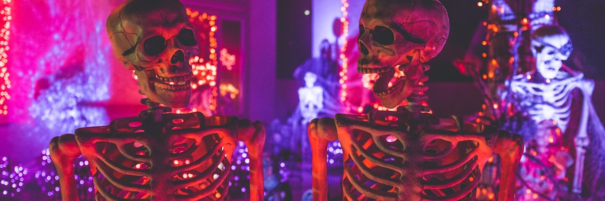

¿Qué es Halloween?
Halloween tiene sus raíces en la antigua festividad céltica de Samhain. Durante esta noche, se creía que la frontera entre el mundo de los vivos y los muertos se difuminaba, permitiendo que los espíritus caminaran entre nosotros.

Halloween es una festividad que se celebra cada 31 de octubre. He creado esta web para explorar su historia, tradiciones y elementos característicos que la hacen tan especial en muchas culturas alrededor del mundo.
Halloween tiene sus raíces en la antigua festividad céltica de Samhain. Durante esta noche, se creía que la frontera entre el mundo de los vivos y los muertos se difuminaba, permitiendo que los espíritus caminaran entre nosotros.

Hoy en día, Halloween se celebra principalmente con disfraces, decoraciones, fiestas y la tradicional actividad del "truco o trato" donde los niños van de casa en casa recolectando dulces.

Las calabazas talladas, los disfraces terroríficos, las brujas, los fantasmas y los murciélagos son algunos de los símbolos más reconocidos de esta festividad que combina elementos de terror y diversión.
Navega por las diferentes secciones de esta web para descubrir más sobre la fascinante historia y tradiciones de Halloween.